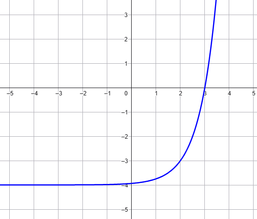
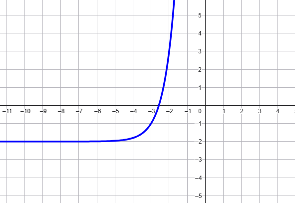

◃
Scheda 15
▹
Esercizio
Rappresentare il grafico della funzione \(f(x) = 3^{x - 4} + 6\)
Esercizio
Rappresentare il grafico della funzione \(f(x) = 3^{x - 1} + 2\)
Esercizio
Rappresentare il grafico della funzione \(f(x) = \left(\dfrac{1}{3}\right)^{x + 3} - 1\)
Esercizio
Scrivere la legge della funzione esponenziale rappresentata nel seguente
grafico

Soluzione
La funzione rappresentata in grafico è
\[
f(x) = 4^{x - 2} - 4
\]
Esercizio
Stabilire la legge che definisce la funzione rappresentata dal seguente
grafico

Soluzione
\[
f(x) = 5^{x + 3} - 2
\]